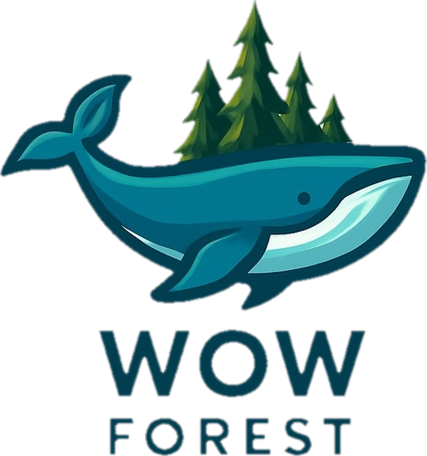

植人對談
我們都只是真理拼圖的一塊

01｜從一個問題開始
我跟植蕨生活 Duke 合作時，突然冒出一個想法。
我們明明都在種鹿角蕨，也都累積了不少自己的經驗，但有趣的是，我們並不是每一件事情都想得一樣。
我想，各位讀者應該也經歷過這一段：
那麼，如果把兩套不同的種植邏輯放在一起，會發生什麼事？
02｜這個世界不缺答案
在網路世界裡，有很多養鹿角蕨的方法。
我慢慢覺得，這個世界上其實不缺答案。
缺少的，是答案與答案之間的溝通。
因為一個人的答案，往往只代表他在某個環境、某個時間、某一批植物得到的答案。另一個人可能有完全不同的答案。
真正有意思的地方不是：
而是：
03｜經驗碰撞，才會產生累積
當我看到別人分享的經驗，我會開始反思自己的經驗，或者想起過去聽過的故事。
跟我一樣的，可能會固化我的知識。
跟我不一樣的，我會開始查資料，或者想辦法弄清楚。
也許就在這個過程裡，又產生了新的答案。我覺得，這或許才是最有價值的過程。
不是：
而是：
04｜所以，我們不急著找答案
我們不急著替問題找出唯一答案。
有些事情，我們可能有共識；
有些事情，我們可能完全不同意彼此；
甚至有些討論結束之後，我們還是不知道答案。
但這沒有關係。因為真正重要的是：
也許今天沒有答案，並不代表這次討論沒有意義。有時候，知道「目前還不知道」，本身也是一種收穫。
05｜真理拼圖
我們都很容易把自己的經驗，當成事情的全貌。但也許我們看到的，只是真相的一小部分。
你有你的環境、你的植物、你的觀察。
我有我的環境、我的植物、我的經驗。
我們看到的可能完全不同。但這不代表其中一個人一定錯了。
而我們想做的，就是把這些拼圖放到一起，看看它們能不能彼此接上。
如果接不上，也沒關係。至少我們知道，還缺了哪一塊。
06｜植人對談
「植人對談」是一個由沃森刊載的系列專欄，延續植播電台對植物、技術與種植思考的探索。
邀請不同的植物愛好者、種植者、育種者與研究者，談他們怎麼種、為什麼這樣種，以及那些還沒有答案的問題。
我們希望每一次對談，都能成為一次拋磚引玉。也許下一塊拼圖，就在讀者手上。